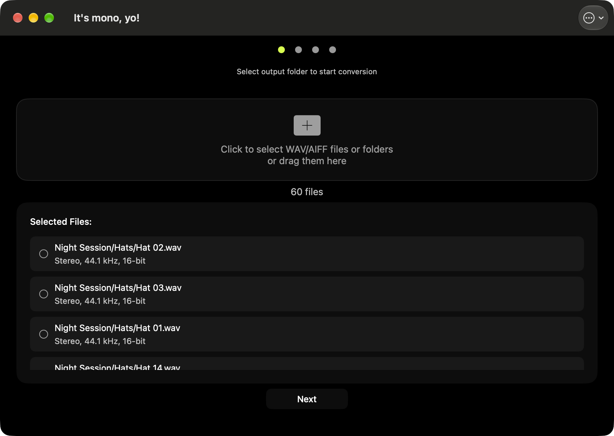

How to Convert Stereo WAV Files to Mono on Mac
Many hardware samplers and music production workflows require mono WAV files. If you have stereo samples that need to be converted, here is how to do it quickly on macOS.
$0.99 once · macOS 12 or later

Why Convert Stereo to Mono?
Hardware samplers like the Erica Synths Sample Drum and many Eurorack samplers only accept mono WAV files. When you load a stereo file into these devices, it may play only one channel, sound distorted, or not load at all. Converting to mono ensures compatibility and consistent playback.
Step-by-Step: Convert Stereo WAV to Mono
Download the app
Get It's mono, yo! from the Mac App Store. It requires macOS 11.0 or later.
Add your WAV files
Drag and drop your stereo WAV files into the app, or press ⌘O to open a file browser. You can add as many files as you need for batch conversion.
Select an output folder
Choose where you want the converted mono files to be saved. The original files are never modified.
Convert
The app converts each file to mono while preserving the original sample rate and bit depth. You can track progress in real time.
What Happens During Conversion?
It's mono, yo! sums the left and right channels into a single mono channel using a proper weighted downmix, so nothing is silently thrown away. The original sample rate (44.1 kHz, 48 kHz, or 96 kHz) and your chosen bit depth (16-bit, 24-bit, or 32-bit float) are preserved, and you can convert a whole folder at once while keeping its structure intact. Your files come out mono, at full quality, ready to load.
Done Right: a Real Downmix, Not Just the Left Channel
This is the part most converters get wrong. A lot of tools, and some DAW exports, fake a mono file by simply keeping the left channel and discarding the right, which quietly throws away half of your sound. Others sum the two channels without accounting for level, so the result jumps in volume or loses punch to phase cancellation.
It's mono, yo! does a proper summed downmix: both channels are combined at the right level so the mono file sounds like the stereo one, just centered. Multi-channel and surround files use the standard ITU-R BS.775 weighting rather than a naive average. For a kick, snare, or loop headed to a hardware sampler, that is the difference between a sample that still hits and one that sounds thin.
Who Is This For?
- Musicians preparing samples for Erica Synths Sample Drum
- Eurorack users who need mono files for modular samplers
- Producers preparing sample packs for hardware devices
- Anyone who needs to batch convert WAV files to mono on macOS
Download Now
Available on the Mac App Store. No ads, no in-app purchases, no subscriptions.
$0.99 once · macOS 12 or later